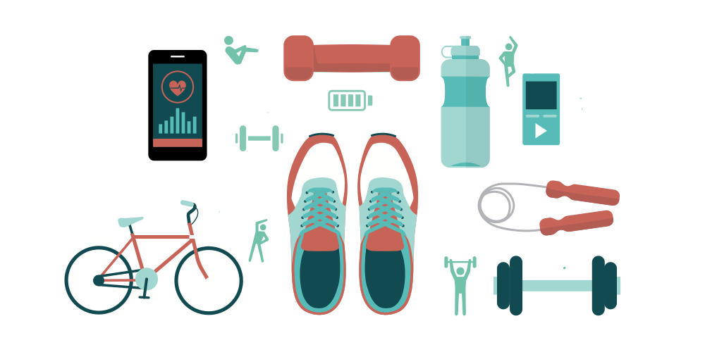

كن نشيطًا, وحافظ على نشاطك
نعلم جميعًا أن ممارسة التمرينات الرياضية مفيدة لنا، وإن كان الجزء الأصعب في الواقع هو الاستيقاظ وبدء الممارسة. الآن بعد أن تعرفت على أساسيات هذه الأنشطة والتمرينات من درس سابق، حان الوقت لمعرفة المزيد عن ما يلي:
كيف تحافظ على نفسك امنًا أثناء ممارسة التمرين.
اتبع إرشاداتنا لتحمي نفسك من الإصاباتكيف تمارس التمارين إذا كنت تُعاني من أي مضاعفات.
استشر طبيبك حول التمارين الرياضية الصحيحة/ الآمنة التي يمكن ممارستها فى ظل ما تعانيه من مضاعفات لمرض السكريكيف تتغلب على المشكلات التي قد تمنعك من ممارس● كيف تتغلب على المشكلات التي قد تمنعك من ممارسة الرياضة.
اجعل التمارين الرياضية جزء من روتينك اليومي.